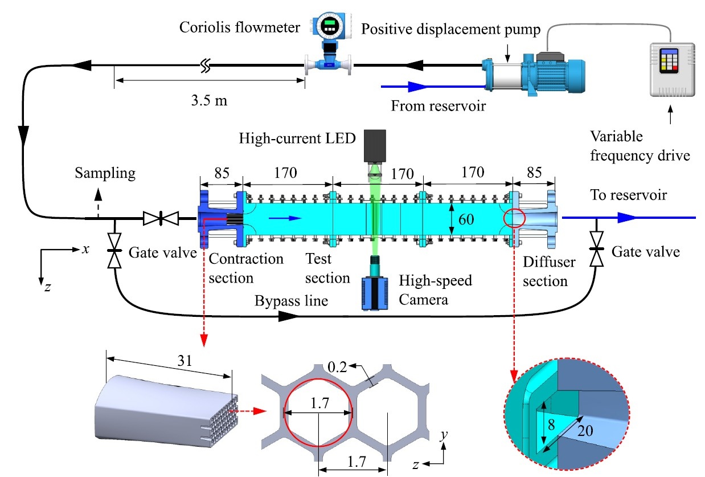
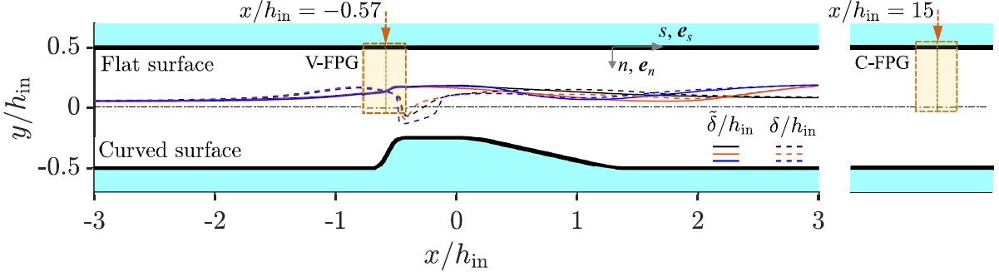
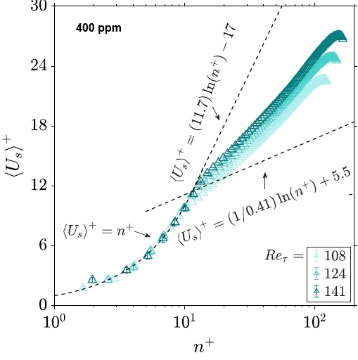
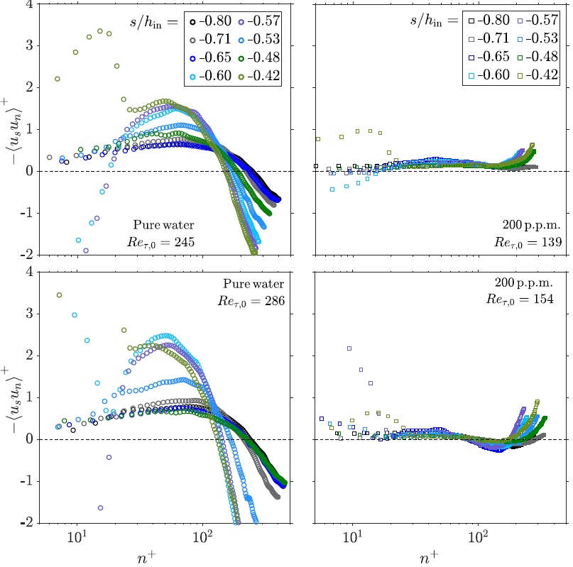

When Polymers and Acceleration Reshape Turbulence
Adding a minute concentration of flexible polymer molecules to water can substantially reduce turbulent drag. Accelerating a turbulent flow can also suppress fluctuations and drive the boundary layer toward relaminarisation. This project asked a fundamental question: what happens when these two effects act simultaneously inside a spatially varying engineering flow?
From Industrial Flow Control to Fundamental Turbulence Physics
The work grew from an engineering problem associated with inflow-control devices used in steam-assisted gravity drainage. Constrictions and nozzles can regulate unwanted phases in these systems, but the resulting pressure losses may induce cavitation, choke the flow, and reduce efficiency. My earlier work showed that drag-reducing polymers can suppress hydrodynamic cavitation. This study examined the underlying near-wall turbulence physics when polymeric flows accelerate through nonuniform geometries.
I designed and built a recirculating flow facility containing a detachable converging-diverging surface. The manufactured geometry imposed successive regions of acceleration, curvature, and pressure-gradient variation, while a flat upstream section provided a fully developed reference flow. This allowed polymer effects under a conventional constant pressure gradient to be separated from their behaviour under strong spatial acceleration.
The Engineering Challenge
The apparatus had to create a controlled but spatially varying pressure gradient while maintaining optical access and resolving velocity gradients within tens of micrometres of the wall. Capturing this required micron-scale spatial resolution, accurate identification of a curved wall, massive statistical sampling of turbulent fluctuations, and a rigorous rheological framework that accounted for the polymers’ shear-dependent viscosity and elastic response.
Measurement Principle
A converging-diverging surface accelerates the flow and generates a spatially varying favourable pressure gradient. Microscopic PIV measures velocity fields along the opposite flat wall, allowing acceleration effects to be examined without optical distortion. Mean velocity, boundary-layer thickness, wall shear, and Reynolds stresses are extracted and compared among water and polymer solutions to determine how viscoelasticity changes near-wall momentum transport.
The Study at a Glance
- 200 and 400 ppm polyacrylamide solutions.
- 11,000 PIV image pairs per experimental condition.
- 40–60 μs pulse separation for frame straddling.
- ~47 μm wall-normal vector spacing.
- < 0.2% mean-velocity measurement error.
- Up to 38.8% drag reduction under constant pressure gradient.
- Up to 89% attenuation of dimensional Reynolds shear stress.
- Up to 87% enhancement of peak streamwise fluctuations.
Key Design Features & Extended Technique
Polymer-seeded and Newtonian flows were imaged at the channel midspan using frame-straddled PIV. The images were processed using background subtraction, local intensity normalisation, and multipass cross-correlation with interrogation windows adapted to the strongly directional near-wall flow. The system integrated several critical design components:
- Replaceable pressure-gradient surface: A detachable converging-diverging profile (60° converging, 2 mm restriction, 12° expansion) creates spatially varying acceleration.
- SLA-manufactured flow path: The contraction, honeycomb, test section, diffuser, and bump were resin printed for controlled hydraulic and optical performance.
- Wide optical test section: A 60 mm channel width provides a minimum aspect ratio of 7.5, supporting a predominantly two-dimensional centre-plane flow.
- Microscopic PIV & Illumination: Magnification of ~3.4 resolves near-wall velocity gradients, while 1.5 μs LED pulses freeze tracer motion within the rapidly accelerating flow.
- Subpixel calibration: Third-order polynomial mapping produced an RMS calibration error below 0.15 pixels.
- Rheological characterisation: Steady-shear and oscillatory measurements quantify shear-thinning and relaxation, fit to the Carreau-Yasuda constitutive model to estimate local wall-shear viscosity.
What the Experiments Revealed
The combination of modular manufacturing, rheological characterisation, and high-resolution velocimetry produced the first spatially resolved experimental dataset of polymer-induced turbulence modification under nonuniform acceleration. The data yielded four primary insights:
1. Polymers redistributed turbulence rather than merely reducing it
In the fully developed reference flow, polymer addition substantially suppressed the transport of momentum toward and away from the wall. At the highest flow rate, peak Reynolds shear stress was reduced by ~78%. Simultaneously, peak dimensional streamwise fluctuations increased by up to 87% for the 400 ppm solution. The polymer did not uniformly suppress every component of turbulence; it weakened wall-normal transport while concentrating fluctuation energy in the streamwise direction.
2. Acceleration amplified turbulence suppression
The spatially varying favourable pressure gradient independently stabilised the flow, but its combination with polymer viscoelasticity produced much stronger attenuation. In the accelerating region, dimensional Reynolds shear stress was reduced by ~89% relative to water. The polymeric mean-velocity profiles departed strongly from the classical logarithmic law, with the strongest combined cases rising above Virk’s ultimate profile.
3. Geometry still mattered locally
The flow did not respond only to the overall pressure gradient. Concave curvature could locally destabilise the boundary layer, while the straight accelerating section allowed the favourable pressure gradient and polymer extension to produce particularly strong suppression. Convex curvature further stabilised parts of the flow, heavily dependent on local wall stress.
4. Drag reduction depended on the operating condition
While 400 ppm solutions achieved maximum measured drag reductions of ~38.8%, lower tested conditions (e.g., 200 ppm at low flow) actually produced a small drag increase. This reinforces a critical engineering principle: polymer concentration, local shear, flow history, and geometry must be designed together.
Experimental Setup & Turbulence Dynamics
Experimental Facility
Modular recirculating system combining flow conditioning, optical access, and high-resolution near-wall PIV.

Replaceable Surface Geometry
Detachable SLA converging-diverging surface generating successive concave, inclined, and convex regions.

Mean Velocity Profiles
Departure from the law of the wall, with strong acceleration cases approaching Virk’s ultimate profile.

Reynolds Shear Stress
Combined viscoelasticity and favourable pressure gradients suppress wall-normal momentum transfer by up to 89%.

Why the Result Matters
Many industrial flow-control elements contain bends, constrictions, expansions, and curved surfaces. Polymer drag reduction in these systems cannot be predicted reliably from canonical straight-pipe measurements alone because the boundary layer retains a spatial history of acceleration and curvature. This work provides benchmark data for conditions closer to practical components and shows why local geometry must be included when modelling or designing polymer-modified flows. The results support the development of curved flow-control devices that actively exploit acceleration while avoiding cavitation, excessive pressure loss, or unstable operation.
Journal Publication & Open Data
R. Azadi and D. S. Nobes, “Near-wall turbulence of semidilute polymer solution flows subjected to varying favorable pressure gradient,” Physical Review Fluids, vol. 11, p. 034611, 2026.
Supported by the Natural Sciences and Engineering Research Council of Canada. Velocity measurements and supporting experimental data are openly archived.